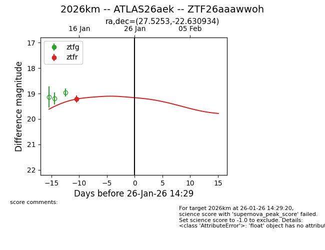
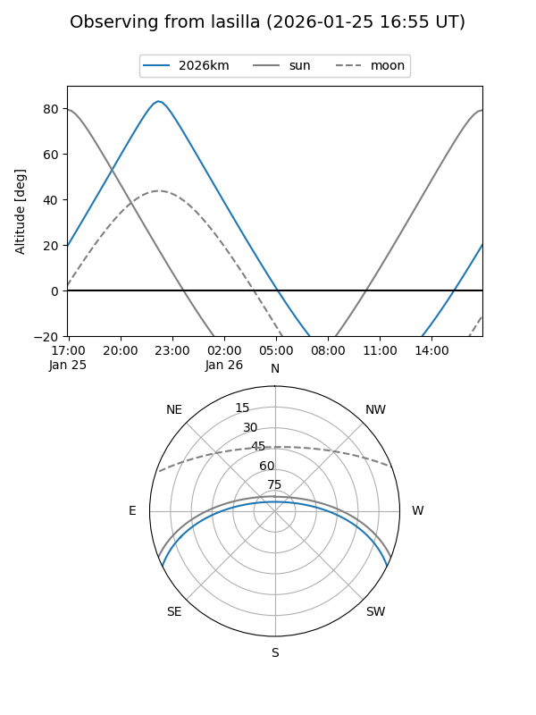
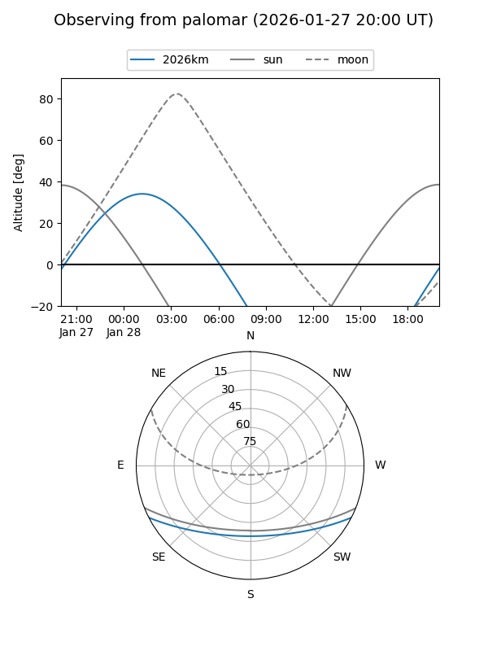
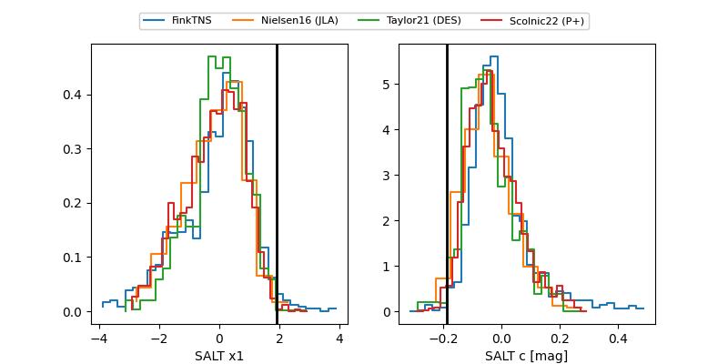

2026km
Target 2026km at 2026-01-28 12:41
Aliases and brokers:
FINK: link
Lasair: link
ALeRCE: link
TNS: link
YSE: link
alt names
ZTF26aaawwoh (ztf,fink_ztf)
2026km (tns,yse)
ATLAS26aek (atlas)
Coordinates:
equatorial (ra, dec) = 27.5253,-22.63093
equatorial (HMS+DMS) = 01:50:06.07,-22:37:51.36
galactic (l, b) = (197.4563,-75.96719)
Flags:
Photometry:
last ztfr=19.22
1 ztfr detections
Lightcurve

Visibility


Additional plots
